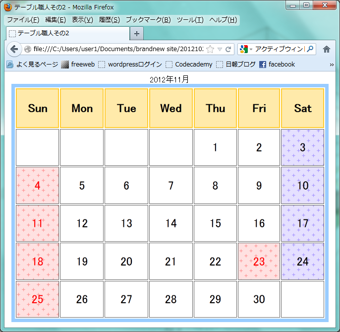
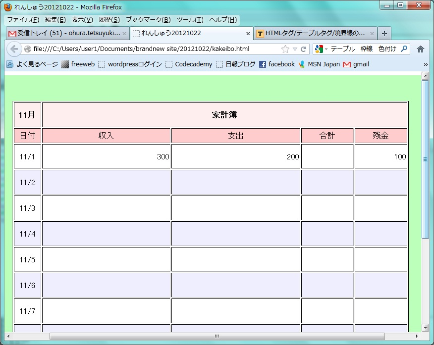

list-style-type:★ (★…disc、circle、square、none)
<ol>～<ol>タグで、その範囲が番号つきのリストであることを示し、順番が重要なリストを作成したい場合に使用します。
リスト表示される項目は、<li>～</li>タグで指定します。
各項目の先頭に連番の数字がつき、一般的なブラウザではリスト全体がインデントして表示されます。
■値の指定方法
disc…●
circle…○
square…■
none…マークなし
【css Source】
#sample1{
list-style-type:none;
}
#sample2{
list-style-type:disc;

